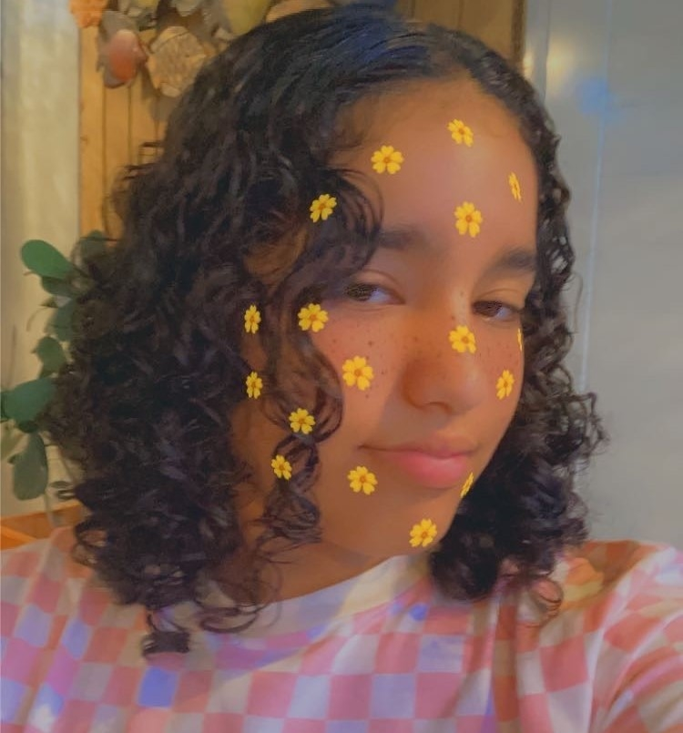

Hands on Work

¿ Cuál es el objetivo del webside ?
 El objetivo
del webside es poder informar a las personas sobre la falta de cooperacion en las comunidades puertorriqueñas para
poder tomar acción y así todos podernos ayudar mejor. En la pandemia del covid-19, la mayoría de las personas se
mantenían aislados en sus casas. Esto hizo que las personas socializaran mucho menos y matuvieran empatía. Es así
como me dí la tarea de poder ayudar a las personas a hacer conciencia sobre la importancia de cooperar y de tener
empatía para así poder crecer más como comunidad.
El objetivo
del webside es poder informar a las personas sobre la falta de cooperacion en las comunidades puertorriqueñas para
poder tomar acción y así todos podernos ayudar mejor. En la pandemia del covid-19, la mayoría de las personas se
mantenían aislados en sus casas. Esto hizo que las personas socializaran mucho menos y matuvieran empatía. Es así
como me dí la tarea de poder ayudar a las personas a hacer conciencia sobre la importancia de cooperar y de tener
empatía para así poder crecer más como comunidad.

¿ Qué es la empatía ?
 La
empatía es la capacidad de comprender los sentimientos y emociones de otra persona,esto tratando de
comprenderla
o como dicen, ponerse en los zapatos de esa persona.
La empatía hace que las personas se ayuden entre sí. Esta tiene una estrecha relacion con el
amor
y preocupación por los demás y la capacidad de ayudar.
Cuando un individuo consigue sentir el dolor o el sufrimiento de los demás poniéndose en su lugar, despierta
el
deseo de ayudar y actuar siguiendo sus principios morales.
La capacidad de ponerse en el lugar del otro, que se desarrolla a través de la empatía, ayuda a comprender
mejor
el comportamiento de las personas y el porqué de ciertas decisiones que toman.
La
empatía es la capacidad de comprender los sentimientos y emociones de otra persona,esto tratando de
comprenderla
o como dicen, ponerse en los zapatos de esa persona.
La empatía hace que las personas se ayuden entre sí. Esta tiene una estrecha relacion con el
amor
y preocupación por los demás y la capacidad de ayudar.
Cuando un individuo consigue sentir el dolor o el sufrimiento de los demás poniéndose en su lugar, despierta
el
deseo de ayudar y actuar siguiendo sus principios morales.
La capacidad de ponerse en el lugar del otro, que se desarrolla a través de la empatía, ayuda a comprender
mejor
el comportamiento de las personas y el porqué de ciertas decisiones que toman.
Más sobre mí...
Bueno...No tengo mucho que decir sobre mí, pero trataré de abundar más sobre el tema. Mi nombre es Alejandra, tengo 14 años y soy de Puerto Rico. Desde que comencé mi adolecencia, noté que muchas personas se negaban a cooperar para beneficio propio o por que simplemente no les importaba la situación del otro. Esto hizo que me enojara mucho y tratara de encontrar una forma de poder arreglar ese problema. Gracias a SOWCoders, me dieron la oportunidad de aprender sobre codificación y por este medio e podido comunicar cómo me siento para así hacer conciencia sobre este problema que es muy frecuente pero no muchas personas hablan sobre ello.
¿Cómo cooperar?